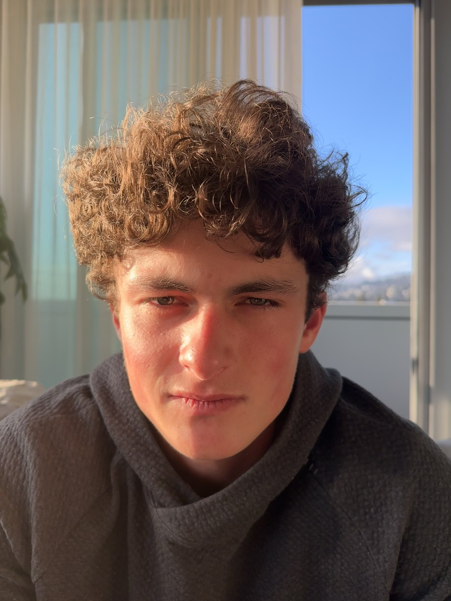
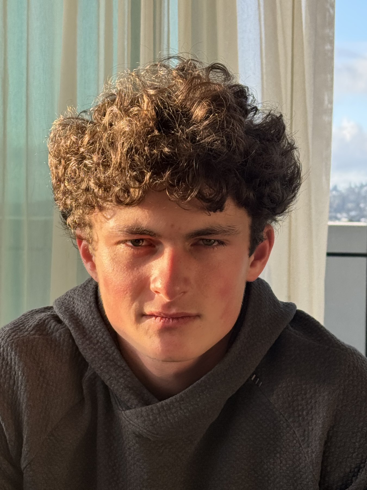
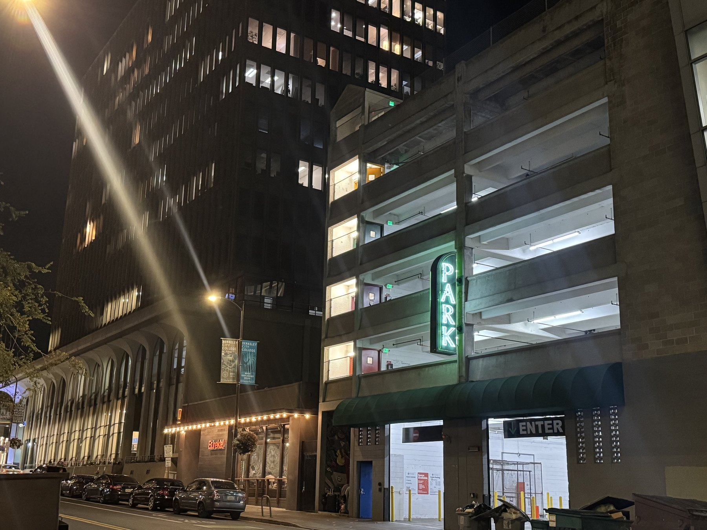
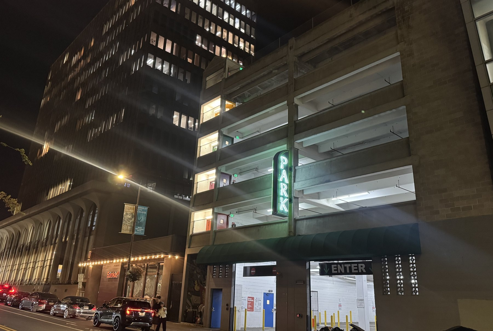
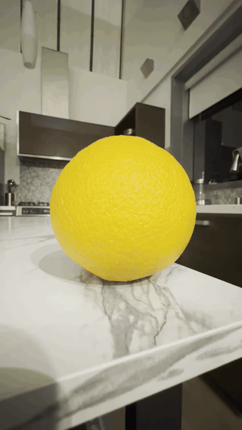
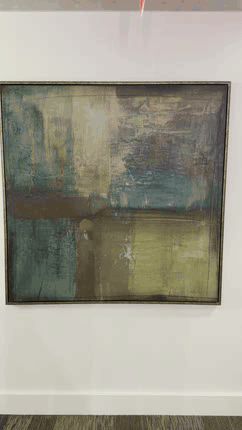
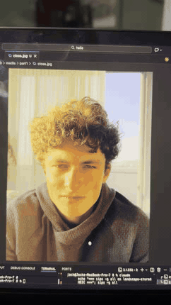

I .LOOKSMAXXING.
LEFT: ARM's LENGTH, 24MM. RIGHT: SEVERAL FEET BACK. 83MM.


II. THE TUNNEL
LEFT: FAR BACK, 41MM, 24MM. RIGHT: CLOSER, 28MM.


The Dolly Zoom
ORANGES, IMPRESSIONISM AND "META".


